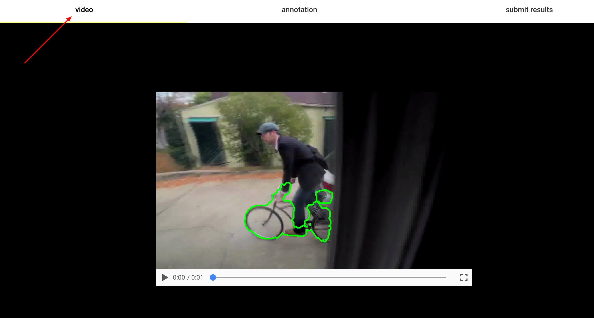
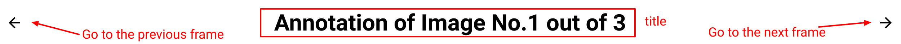
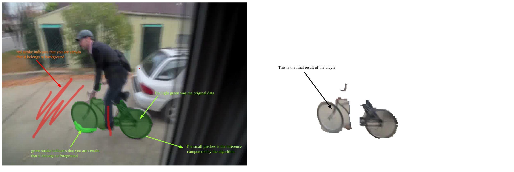
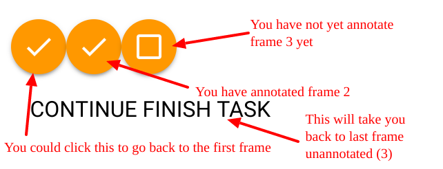
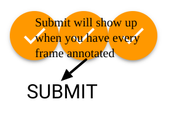

Video Segmentation Annotation Improvement Tool
Table of Contents
The video segmentation annotation improvement tool is a single page web application that helps one to annotate frames in a video segmentation - whether certain area of the frame belongs to the foreground or background.
1 Tutorial
This document help you to walk through how to use this tool for the first time.
1.1 Part 1 Watch video
We suggest you first watch the video of what you are about to annotate. Click the tab "video" and you will be lead to a screen that contains video. You could get a general idea what the video is about.

Figure 1: go to video tab that contains one video
1.2 Part 2 Start to annotate
Then you could click the annotation tab, and get ready to annotate! You would be ask to annotate several images, and for each frame there would be a pre-computed segmentation available. Your task is to correct the annotation if you think the computer get it wrong.
1.2.1 Components
The components are introduced here. You could skip this section and start with common steps.
- Top bar
The interface is divided into three parts. The status bar on the top indicates your current status. "Annotation of Image No.1 out of 3" means that there are three images we would like you to annotate and there are in total 3 images.
You could navigate to different frames with the left and right arrows at the left and right side of the title.

Figure 2: topbar
- Control bar
There are several buttons on the control bar.
- "RESET" button - The left most is a reset button. If you made a mistake on the annotation, click the button will restore the annotation to the pre-computed segmentation, and you could start over again.
- "Manual-Automatic Toggle" - Then there is a toggle that switches between "manual mode" and "automatic mode". After you provide the stroke, the application would intelligently pick up your clue and recompute the segmentation based on your guidance. "Automatic mode" means that it would recompute the segmentation every stroke you made. "Manual mode" means that it will patiently wait all your stroke. And recompute the segmentation only when you click "COMPUTE" button.
- "Stroke Size slide" - For annotation, you are asked to stroke on canvas. If you want to make big changes to the annotation, you would slide the slider to the right so that each stroke is thick enough. And if you just want to fine tuning the boundary of the segmentation, you could slide the slider to the right, and stroke would be thin. The dot besides the slide, indicates how thick your current stroke is.
- "Background-Foreground Toggle" - This toggle will switch between foreground and background mode. If you wish to annotate your stroke as background/foreground, you could toggle it to the left/right.
Figure 3: Annotation Control Bar
- Canvas
There are two canvas at the bottom
- "Annotation Canvas" - The canvas on the left is for you to annotate. The image is presented in the canvas. And there is a layer of green mask that indicates the our pre-computed result. You could drag your mouse and a stroke will appear on canvas. Then the computer would inference the foreground and background based on your suggestion.
- "Result Canvas" - The canvas on the right shows the result of your annotation. It keep only the inferenced foreground, and it will update along with every inference (whether automatically with automatic mode, or after COMPUTE with compute mode).

Figure 4: two annotation canvas
1.2.2 Common steps
Here is the suggestion how you could annotate
- Choose whether you wish to use automatic mode/manual mode, toggle to Automatic Mode/Manual Mode
- Slide the stroke so that it is thick enough
- Choose the foreground
- Stroke the area that is missing, if you are in manual mode, click COMPUTE to update when you are finished.
- Choose the background
- Stroke the area that is redundant, if you are in manual mode, click COMPUTE to update when you are finished.
- Slide stroke to a smaller range, repeat 2-6 until you are satisfied with the annotation
- click the right arrow to annotate the next frame

Figure 5: example
1.3 Part 3 Submit the result
After you have done the annotation, you can go ahead to the submit result
- If you finished all the result, please click the button "Submit"
- The circle on the top indicates whether you finished the frame or not. If it is a check, it means you have annotated that frame. If it is a square, then you have not done any annotation on that frame.
- You could also click the circle to go back to that frame for annotation.

